B02 · 2026-09-13 · 20:55 Baghdad«تعديل بسيط»… على أي حساب؟تغيير التشطيب يكشف سؤالين: فرق الكلفة وأثر التوريد على موعد المشروع.B021 / 6 · تنزيل PNG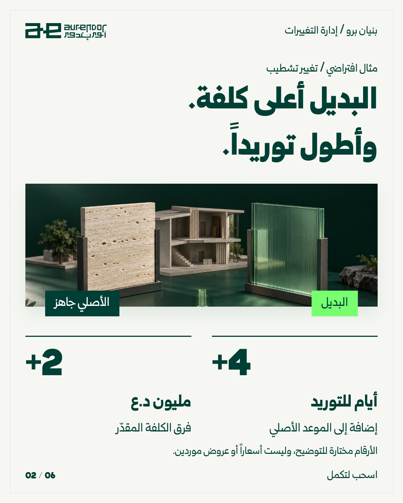2 / 6 · تنزيل PNG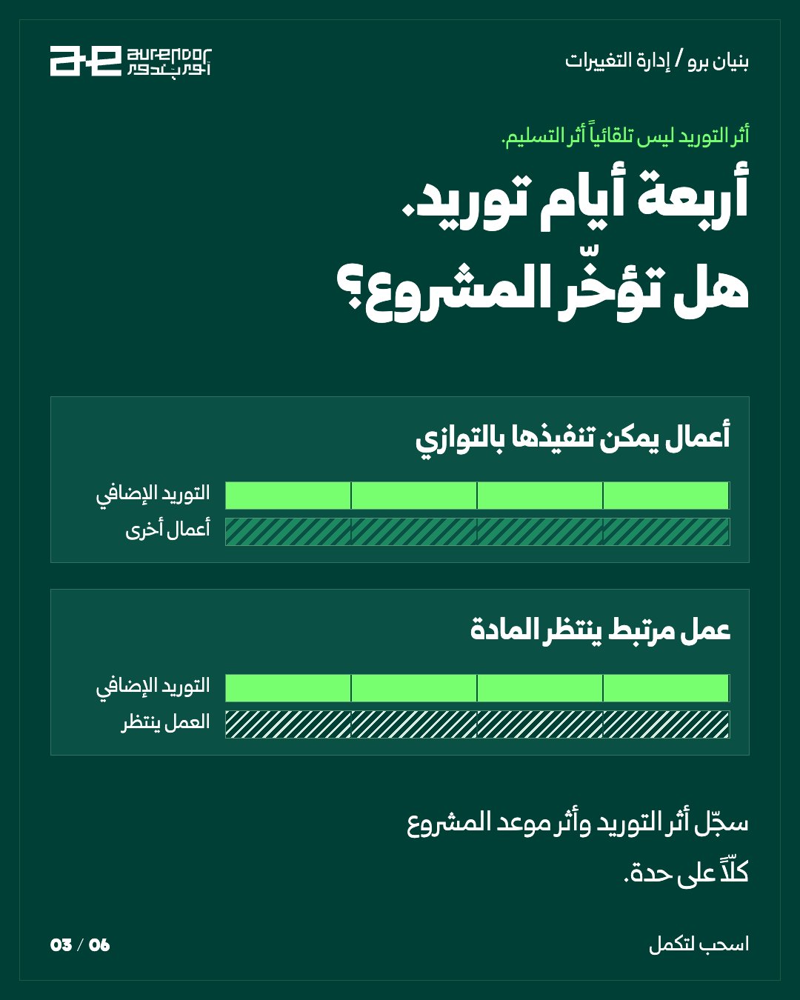3 / 6 · تنزيل PNG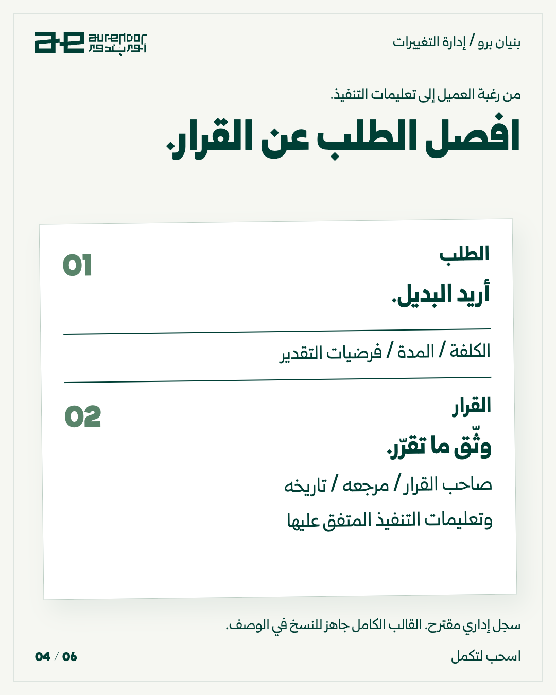4 / 6 · تنزيل PNG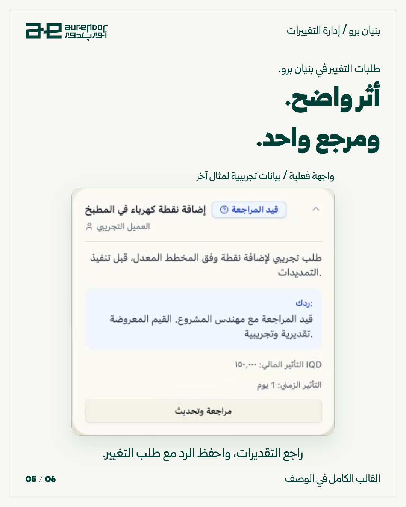5 / 6 · تنزيل PNG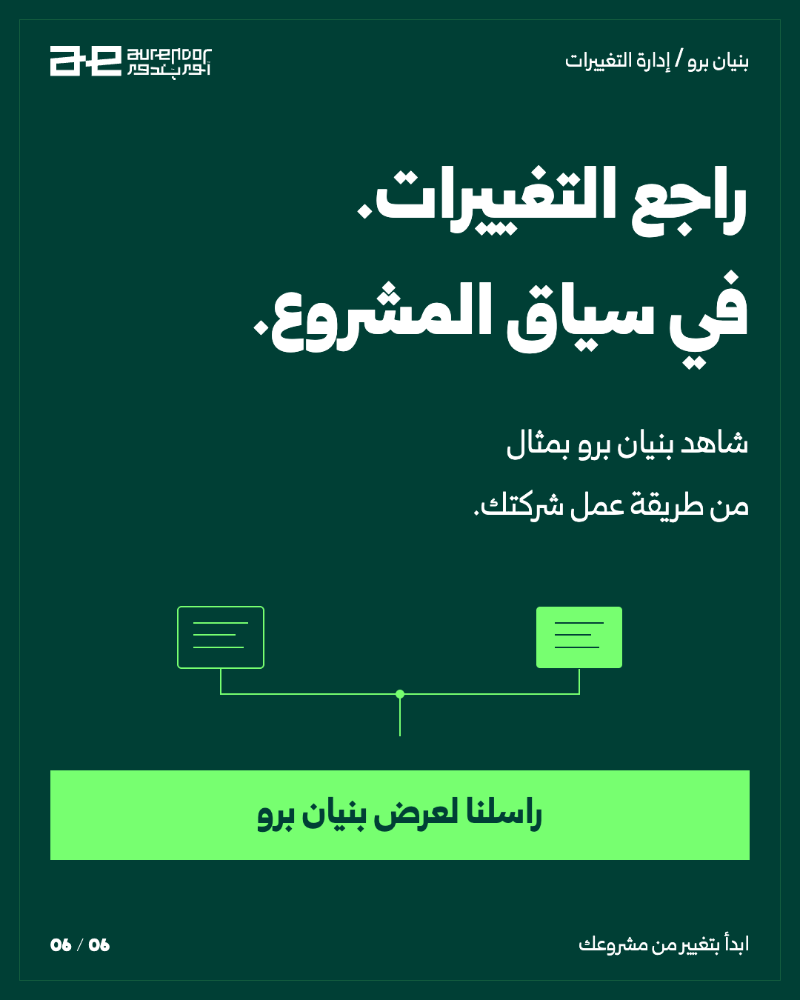6 / 6 · تنزيل PNGتنزيل حزمة B02نسخة LinkedIn PDFتنزيل الوصفالفكرة والمصادرالوصف الجاهز للنسخنسخ الوصففي المثال التعليمي، سعر البديل أعلى بمليوني دينار ومدة توريده أطول بأربعة أيام. لكن هذا لا يعني تلقائياً أن تسليم المشروع يتأخر أربعة أيام: راجع ما إذا كان التوريد يوقف عملاً على الجدول أو يمكن تنفيذه بالتوازي. اكتب الأثر مع فرضياته، ثم حدّد من يملك قرار التنفيذ. إذا تغيّرت الفرضية، مثل موعد وصول البديل، حدّث التقدير قبل الاعتماد عليه. بنيان برو يوفر مكاناً لطلب التغيير ورد الإدارة وأثره؛ لا يحسب هذا الأثر تلقائياً ولا يعدّل العقد بدلاً عنكم. للسياق المحلي: دراسة مشاريع أربيل العامة، 2019 — https://journals.cihanuniversity.edu.iq/index.php/cuesj/article/view/42. قالب جاهز للنسخ: رقم الطلب: ___ | التاريخ: ___ الموضع والنطاق الحالي: ___ التغيير المطلوب وسببه: ___ فرق الكلفة المقدّر والعملة: ___ فرضية السعر وصلاحيته: ___ أثر التوريد: ___ يوم أثر موعد المشروع بعد مراجعة التسلسل: ___ / لم يُحسم بديل يحافظ على الموعد: ___ صاحب القرار ومرجعه وتاريخه: ___ تعليمات التنفيذ المعتمدة: ___ هذا سجل إداري مقترح؛ ليس نموذج تعديل عقد قانوني. راسلنا لعرض بنيان برو بمثال من طريقة عمل شركتك.نسخ المنصاتinstagram{ "format": "carousel 4:5", "caption": "في المثال التعليمي، سعر البديل أعلى بمليوني دينار ومدة توريده أطول بأربعة أيام. لكن هذا لا يعني تلقائياً أن تسليم المشروع يتأخر أربعة أيام: راجع ما إذا كان التوريد يوقف عملاً على الجدول أو يمكن تنفيذه بالتوازي.\nاكتب الأثر مع فرضياته، ثم حدّد من يملك قرار التنفيذ. إذا تغيّرت الفرضية، مثل موعد وصول البديل، حدّث التقدير قبل الاعتماد عليه. بنيان برو يوفر مكاناً لطلب التغيير ورد الإدارة وأثره؛ لا يحسب هذا الأثر تلقائياً ولا يعدّل العقد بدلاً عنكم.\nللسياق المحلي: دراسة مشاريع أربيل العامة، 2019 — https://journals.cihanuniversity.edu.iq/index.php/cuesj/article/view/42.\n\nقالب جاهز للنسخ:\nرقم الطلب: ___ | التاريخ: ___\nالموضع والنطاق الحالي: ___\nالتغيير المطلوب وسببه: ___\nفرق الكلفة المقدّر والعملة: ___\nفرضية السعر وصلاحيته: ___\nأثر التوريد: ___ يوم\nأثر موعد المشروع بعد مراجعة التسلسل: ___ / لم يُحسم\nبديل يحافظ على الموعد: ___\nصاحب القرار ومرجعه وتاريخه: ___\nتعليمات التنفيذ المعتمدة: ___\nهذا سجل إداري مقترح؛ ليس نموذج تعديل عقد قانوني.\n\nراسلنا لعرض بنيان برو بمثال من طريقة عمل شركتك." }facebook{ "format": "numbered image album", "caption": "لأصحاب شركات المقاولات والمكاتب الهندسية:\nفي المثال التعليمي، سعر البديل أعلى بمليوني دينار ومدة توريده أطول بأربعة أيام. لكن هذا لا يعني تلقائياً أن تسليم المشروع يتأخر أربعة أيام: راجع ما إذا كان التوريد يوقف عملاً على الجدول أو يمكن تنفيذه بالتوازي.\nاكتب الأثر مع فرضياته، ثم حدّد من يملك قرار التنفيذ. إذا تغيّرت الفرضية، مثل موعد وصول البديل، حدّث التقدير قبل الاعتماد عليه. بنيان برو يوفر مكاناً لطلب التغيير ورد الإدارة وأثره؛ لا يحسب هذا الأثر تلقائياً ولا يعدّل العقد بدلاً عنكم.\nللسياق المحلي: دراسة مشاريع أربيل العامة، 2019 — https://journals.cihanuniversity.edu.iq/index.php/cuesj/article/view/42.\n\nناقشوا هذا الإجراء في اجتماع الموقع القادم.\n\nقالب جاهز للنسخ:\nرقم الطلب: ___ | التاريخ: ___\nالموضع والنطاق الحالي: ___\nالتغيير المطلوب وسببه: ___\nفرق الكلفة المقدّر والعملة: ___\nفرضية السعر وصلاحيته: ___\nأثر التوريد: ___ يوم\nأثر موعد المشروع بعد مراجعة التسلسل: ___ / لم يُحسم\nبديل يحافظ على الموعد: ___\nصاحب القرار ومرجعه وتاريخه: ___\nتعليمات التنفيذ المعتمدة: ___\nهذا سجل إداري مقترح؛ ليس نموذج تعديل عقد قانوني.\n\nراسلنا لعرض بنيان برو بمثال من طريقة عمل شركتك." }linkedin{ "format": "PDF document carousel", "copy": "فرق السعر ليس الأثر الوحيد لتغيير التشطيب. في مثال افتراضي: بديل يزيد مليوني دينار ويتأخر توريده أربعة أيام. السؤال الإداري التالي هو: هل يوقف نشاطاً ينتظره، أم يقع داخل وقت متاح؟\nلذلك نقترح أن يسجّل المكتب أثر التوريد منفصلاً عن أثر تاريخ التسليم، مع صاحب القرار ومرجعه. بنيان برو يدعم تسجيل طلب التغيير ورد الإدارة وأثر الكلفة والمدة المدخل يدوياً. تقدير التسلسل واعتماد تعديل التعاقد يبقيان لدى الأطراف المختصة.\nالزاوية مستندة إلى مشكلات تغييرات المالك التي ناقشتها دراسة أربيل العامة لعام 2019، وليست نسبة انتشار وطنية: https://journals.cihanuniversity.edu.iq/index.php/cuesj/article/view/42\n\nقالب جاهز للنسخ:\nرقم الطلب: ___ | التاريخ: ___\nالموضع والنطاق الحالي: ___\nالتغيير المطلوب وسببه: ___\nفرق الكلفة المقدّر والعملة: ___\nفرضية السعر وصلاحيته: ___\nأثر التوريد: ___ يوم\nأثر موعد المشروع بعد مراجعة التسلسل: ___ / لم يُحسم\nبديل يحافظ على الموعد: ___\nصاحب القرار ومرجعه وتاريخه: ___\nتعليمات التنفيذ المعتمدة: ___\nهذا سجل إداري مقترح؛ ليس نموذج تعديل عقد قانوني.\n\nراسلنا لعرض بنيان برو بمثال من طريقة عمل شركتك." }x{ "format": "thread with annotated example image", "posts": [ "«تعديل بسيط» في التشطيب: +2 مليون دينار و4 أيام توريد إضافية. مثال افتراضي. الأربعة أيام ليست تلقائياً تأخيراً للمشروع؛ اسأل أي نشاط ينتظرها.", "ورقة التغيير المفيدة: النطاق / فرق الكلفة / أثر التوريد / أثر الموعد بعد مراجعة التسلسل / صاحب القرار ومرجعه. الطلب والقرار خطوتان منفصلتان.", "راسلنا لعرض بنيان برو بمثال من طريقة عمل شركتك." ] }tiktok{ "format": "photo carousel", "caption": "العميل غيّر التشطيب. ما الذي تغيّر في الكلفة والموعد؟\nورقة تغيير قصيرة تفصل الطلب والتقدير والقرار، وتكشف أثر الوقت الذي قد يضيع خلف فرق السعر.\nمثال تعليمي افتراضي. راجع آخر تغيير: هل سُجّل أثر المدة أم السعر فقط؟\n\nقالب جاهز للنسخ:\nرقم الطلب: ___ | التاريخ: ___\nالموضع والنطاق الحالي: ___\nالتغيير المطلوب وسببه: ___\nفرق الكلفة المقدّر والعملة: ___\nفرضية السعر وصلاحيته: ___\nأثر التوريد: ___ يوم\nأثر موعد المشروع بعد مراجعة التسلسل: ___ / لم يُحسم\nبديل يحافظ على الموعد: ___\nصاحب القرار ومرجعه وتاريخه: ___\nتعليمات التنفيذ المعتمدة: ___\nهذا سجل إداري مقترح؛ ليس نموذج تعديل عقد قانوني.\n\nراسلنا لعرض بنيان برو بمثال من طريقة عمل شركتك." }الإنتاج والمصادر والحقوقصور المجسّمات والطاولة تصميمات توضيحية. لقطة بنيان من التطبيق الفعلي ببيانات تجريبية. الفكرة التعليمية في الريل مؤلفة لشرح الطريقة.سجل الإنتاجالمصادر: B-ERBIL, B-CHANGE, B-PRODUCT · فتح المراجع ضمن الخطة
U02 · 2026-09-14 · 09:25 Baghdadالخلفية تغيّرت. والعنوان أيضًا؟تعديل محدد في دعوة: ما الذي يتغير، وما الذي يجب أن يبقى؟ مثال قابل للفحص وقالب جاهز.U02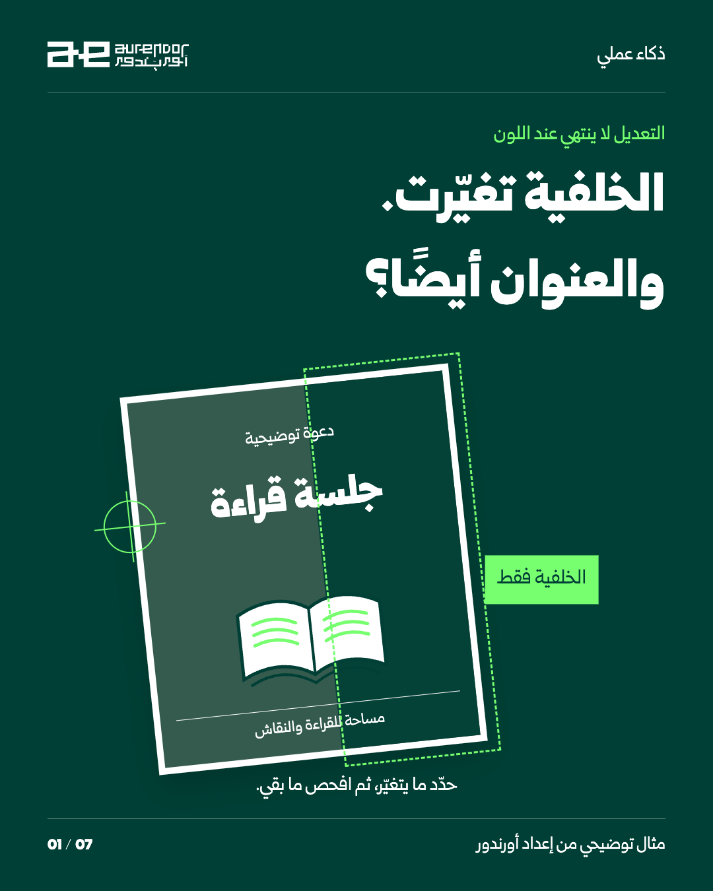1 / 7 · تنزيل PNG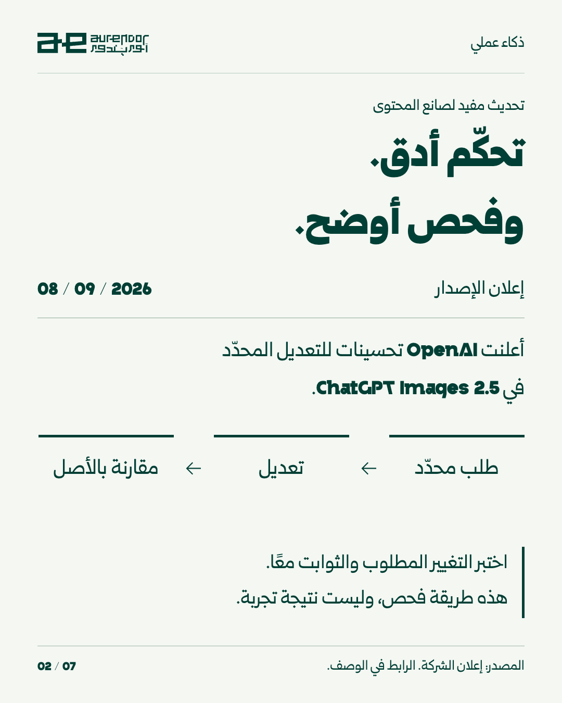2 / 7 · تنزيل PNG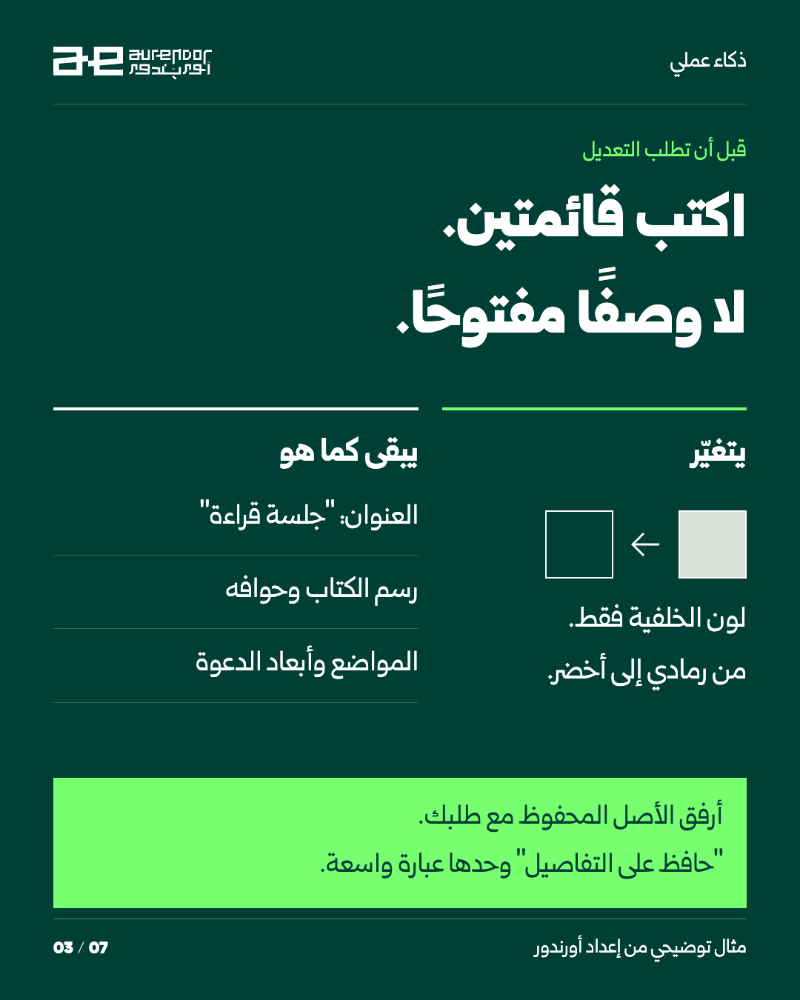3 / 7 · تنزيل PNG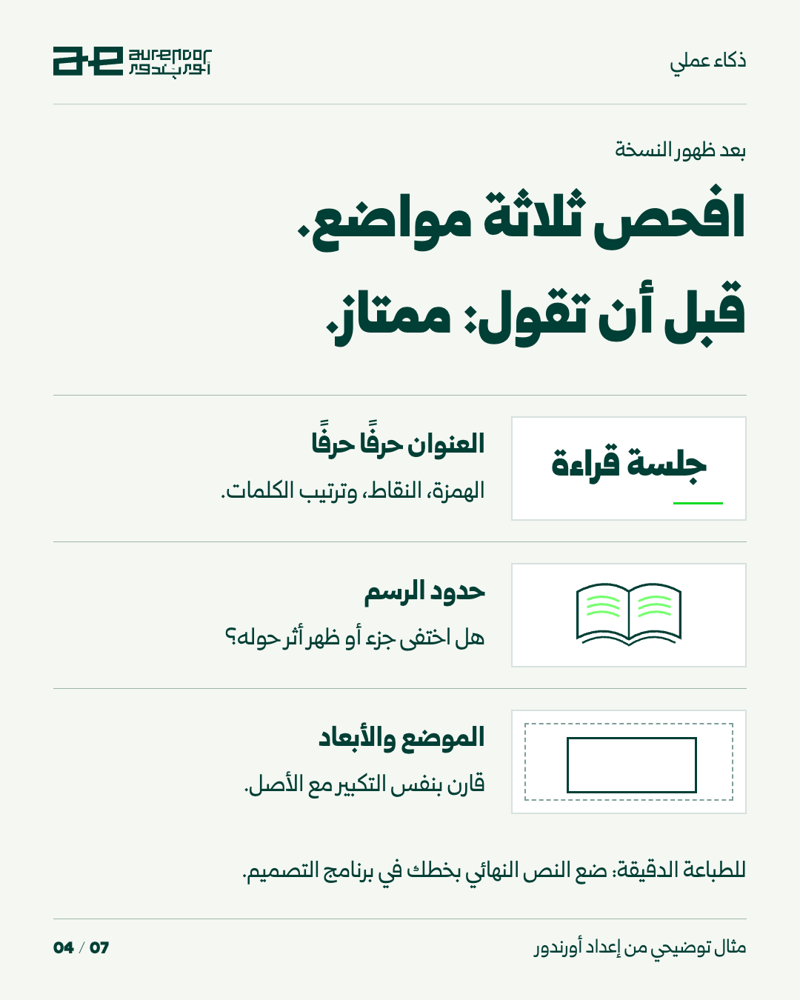4 / 7 · تنزيل PNG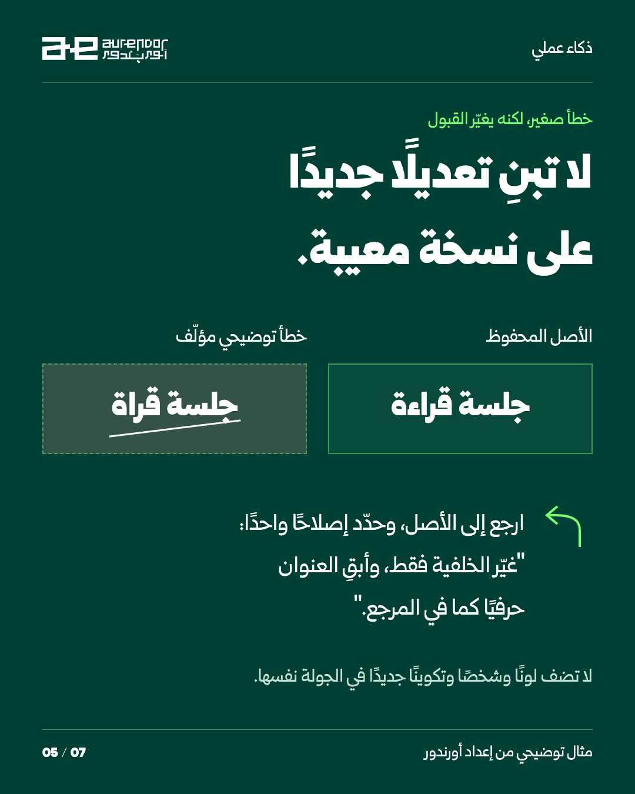5 / 7 · تنزيل PNG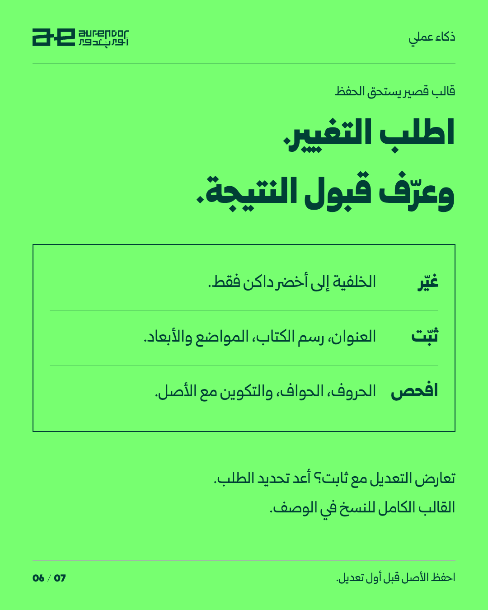6 / 7 · تنزيل PNG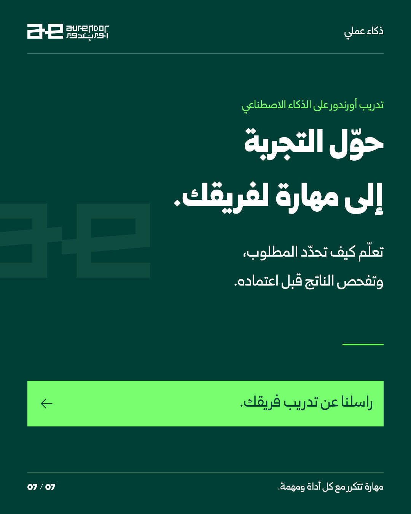7 / 7 · تنزيل PNGتنزيل حزمة U02نسخة LinkedIn PDFتنزيل الوصفالفكرة والمصادرالوصف الجاهز للنسخنسخ الوصففي 8 سبتمبر 2026 أعلنت OpenAI إصدار ChatGPT Images 2.5، مع تحسينات للتعديلات المحدّدة والحفاظ على التفاصيل بين الجولات. هذه قدرات تصفها الشركة، وليست ضمانًا لسلامة كل تعديل. راجع توافرها وحدودها في حسابك. الفائدة العملية: حين تطلب خلفية جديدة، عرّف ما يجب أن يبقى قبل أن تحكم على جمال النتيجة. في دعوتنا التوضيحية: العنوان «جلسة قراءة»، رسم الكتاب، والمواضع والأبعاد. افحص الحروف، حدود الرسم، والتكوين بنفس التكبير مع الأصل. إذا ظهر خطأ، ارجع إلى المرجع المحفوظ وحدّد إصلاحًا واحدًا. الرسوم والأخطاء في الشرائح أمثلة مؤلّفة لشرح طريقة الفحص؛ ليست مخرجات اختبار للإصدار. للمطبوعات الدقيقة، ضع النص النهائي في برنامج التصميم بخطك الصحيح بعد اعتماد الصورة. قالب للنسخ: عدّل الدعوة التي أملك حق استخدامها. المرجع المرفق هو الأصل. التغيير الوحيد: لون الخلفية من رمادي إلى أخضر داكن. حافظ حرفيًا على العنوان «جلسة قراءة»، وعلى رسم الكتاب وحوافه ومواضع العناصر وأبعاد الصورة. لا تضف رموزًا أو كتابة. إذا احتاج التغيير إلى تعديل أحد هذه الثوابت، وضّح التعارض أولًا. سأقارن الناتج مع الأصل: حروف العنوان، حدود الرسم، والمواضع والأبعاد. لا أقبل نسخة تغيّر تفصيلًا ثابتًا، حتى لو بدت أجمل. تريد أن يكتسب فريقك طريقة واضحة لطلب التعديل وفحص الناتج؟ راسل أورندور عن تدريب فريقك على استخدام الذكاء الاصطناعي في العمل. المصدر: https://openai.com/index/introducing-chatgpt-images-2-5/نسخ المنصاتinstagram{ "format": "7-slide carousel 4:5", "caption": "في 8 سبتمبر 2026 أعلنت OpenAI إصدار ChatGPT Images 2.5، مع تحسينات للتعديلات المحدّدة والحفاظ على التفاصيل بين الجولات. هذه قدرات تصفها الشركة، وليست ضمانًا لسلامة كل تعديل. راجع توافرها وحدودها في حسابك.\n\nالفائدة العملية: حين تطلب خلفية جديدة، عرّف ما يجب أن يبقى قبل أن تحكم على جمال النتيجة. في دعوتنا التوضيحية: العنوان «جلسة قراءة»، رسم الكتاب، والمواضع والأبعاد. افحص الحروف، حدود الرسم، والتكوين بنفس التكبير مع الأصل. إذا ظهر خطأ، ارجع إلى المرجع المحفوظ وحدّد إصلاحًا واحدًا.\n\nالرسوم والأخطاء في الشرائح أمثلة مؤلّفة لشرح طريقة الفحص؛ ليست مخرجات اختبار للإصدار. للمطبوعات الدقيقة، ضع النص النهائي في برنامج التصميم بخطك الصحيح بعد اعتماد الصورة.\n\nقالب للنسخ:\nعدّل الدعوة التي أملك حق استخدامها. المرجع المرفق هو الأصل. التغيير الوحيد: لون الخلفية من رمادي إلى أخضر داكن. حافظ حرفيًا على العنوان «جلسة قراءة»، وعلى رسم الكتاب وحوافه ومواضع العناصر وأبعاد الصورة. لا تضف رموزًا أو كتابة. إذا احتاج التغيير إلى تعديل أحد هذه الثوابت، وضّح التعارض أولًا. سأقارن الناتج مع الأصل: حروف العنوان، حدود الرسم، والمواضع والأبعاد. لا أقبل نسخة تغيّر تفصيلًا ثابتًا، حتى لو بدت أجمل.\n\nتريد أن يكتسب فريقك طريقة واضحة لطلب التعديل وفحص الناتج؟ راسل أورندور عن تدريب فريقك على استخدام الذكاء الاصطناعي في العمل.\n\nالمصدر: https://openai.com/index/introducing-chatgpt-images-2-5/", "assets": [ "exports/slide-01.png", "exports/slide-02.png", "exports/slide-03.png", "exports/slide-04.png", "exports/slide-05.png", "exports/slide-06.png", "exports/slide-07.png" ] }facebook{ "format": "image album", "caption": "في 8 سبتمبر 2026 أعلنت OpenAI إصدار ChatGPT Images 2.5، مع تحسينات للتعديلات المحدّدة والحفاظ على التفاصيل بين الجولات. هذه قدرات تصفها الشركة، وليست ضمانًا لسلامة كل تعديل. راجع توافرها وحدودها في حسابك.\n\nالفائدة العملية: حين تطلب خلفية جديدة، عرّف ما يجب أن يبقى قبل أن تحكم على جمال النتيجة. في دعوتنا التوضيحية: العنوان «جلسة قراءة»، رسم الكتاب، والمواضع والأبعاد. افحص الحروف، حدود الرسم، والتكوين بنفس التكبير مع الأصل. إذا ظهر خطأ، ارجع إلى المرجع المحفوظ وحدّد إصلاحًا واحدًا.\n\nالرسوم والأخطاء في الشرائح أمثلة مؤلّفة لشرح طريقة الفحص؛ ليست مخرجات اختبار للإصدار. للمطبوعات الدقيقة، ضع النص النهائي في برنامج التصميم بخطك الصحيح بعد اعتماد الصورة.\n\nقالب للنسخ:\nعدّل الدعوة التي أملك حق استخدامها. المرجع المرفق هو الأصل. التغيير الوحيد: لون الخلفية من رمادي إلى أخضر داكن. حافظ حرفيًا على العنوان «جلسة قراءة»، وعلى رسم الكتاب وحوافه ومواضع العناصر وأبعاد الصورة. لا تضف رموزًا أو كتابة. إذا احتاج التغيير إلى تعديل أحد هذه الثوابت، وضّح التعارض أولًا. سأقارن الناتج مع الأصل: حروف العنوان، حدود الرسم، والمواضع والأبعاد. لا أقبل نسخة تغيّر تفصيلًا ثابتًا، حتى لو بدت أجمل.\n\nتريد أن يكتسب فريقك طريقة واضحة لطلب التعديل وفحص الناتج؟ راسل أورندور عن تدريب فريقك على استخدام الذكاء الاصطناعي في العمل.\n\nالمصدر: https://openai.com/index/introducing-chatgpt-images-2-5/", "assets": [ "exports/slide-01.png", "exports/slide-02.png", "exports/slide-03.png", "exports/slide-04.png", "exports/slide-05.png", "exports/slide-06.png", "exports/slide-07.png" ] }linkedin{ "format": "document", "documentTitle": "تعديل واحد، وثلاثة ثوابت", "copy": "تحديث أدوات الصور لا يلغي الحاجة إلى معيار قبول واضح. إعلان OpenAI بتاريخ 8 سبتمبر 2026 يصف تحسينات التعديل المحدّد في ChatGPT Images 2.5.\n\nنحوّل هذه الإمكانية إلى طريقة عمل: اكتب التغيير الوحيد، وثلاثة ثوابت، ثم قارن الناتج بالأصل. في مثال الدعوة: تغيّر الخلفية، ويبقى العنوان ورسم الكتاب ومواضع العناصر. حذف همزة من العنوان كافٍ لإعادة التصحيح؛ الصورة الأجمل لا تعوّض نصًا خاطئًا.\n\nهذا مثال تعليمي مؤلّف، وليس اختبار أداء أجريناه. راجع الحساب والإتاحة الفعلية؛ وللنصوص الدقيقة استخدم برنامج التصميم وخط العلامة.\n\nتريد أن يكتسب فريقك طريقة واضحة لطلب التعديل وفحص الناتج؟ راسل أورندور عن تدريب فريقك على استخدام الذكاء الاصطناعي في العمل.\n\nالقالب:\nعدّل الدعوة التي أملك حق استخدامها. المرجع المرفق هو الأصل. التغيير الوحيد: لون الخلفية من رمادي إلى أخضر داكن. حافظ حرفيًا على العنوان «جلسة قراءة»، وعلى رسم الكتاب وحوافه ومواضع العناصر وأبعاد الصورة. لا تضف رموزًا أو كتابة. إذا احتاج التغيير إلى تعديل أحد هذه الثوابت، وضّح التعارض أولًا. سأقارن الناتج مع الأصل: حروف العنوان، حدود الرسم، والمواضع والأبعاد. لا أقبل نسخة تغيّر تفصيلًا ثابتًا، حتى لو بدت أجمل.\n\nالمصدر: https://openai.com/index/introducing-chatgpt-images-2-5/", "asset": "exports/carousel-linkedin.pdf" }tiktok{ "format": "photo carousel", "caption": "غيّر الخلفية، وافحص ما بقي.\n\nدعوة «جلسة قراءة» مثال مؤلّف: العنوان، الرسم والمواضع ثوابت. الخطأ الظاهر في الشريحة الخامسة مقصود للتوضيح، وليس نتيجة اختبار أداة.\n\nقالب للنسخ:\nعدّل الدعوة التي أملك حق استخدامها. المرجع المرفق هو الأصل. التغيير الوحيد: لون الخلفية من رمادي إلى أخضر داكن. حافظ حرفيًا على العنوان «جلسة قراءة»، وعلى رسم الكتاب وحوافه ومواضع العناصر وأبعاد الصورة. لا تضف رموزًا أو كتابة. إذا احتاج التغيير إلى تعديل أحد هذه الثوابت، وضّح التعارض أولًا. سأقارن الناتج مع الأصل: حروف العنوان، حدود الرسم، والمواضع والأبعاد. لا أقبل نسخة تغيّر تفصيلًا ثابتًا، حتى لو بدت أجمل.\n\nتريد أن يكتسب فريقك طريقة واضحة لطلب التعديل وفحص الناتج؟ راسل أورندور عن تدريب فريقك على استخدام الذكاء الاصطناعي في العمل.\n\nالمصدر: https://openai.com/index/introducing-chatgpt-images-2-5/", "assets": [ "exports/slide-01.png", "exports/slide-02.png", "exports/slide-03.png", "exports/slide-04.png", "exports/slide-05.png", "exports/slide-06.png", "exports/slide-07.png" ] }x{ "format": "3-post thread with selected images", "posts": [ "تغيّر خلفية الدعوة، لكن تختفي همزة من عنوانها. هل تعتمدها؟\nاكتب قبل التعديل: ما يتغيّر، وما يبقى. ثم افحص الحروف، حواف الرسم، والمواضع. المثال مؤلّف لشرح طريقة الفحص.", "إعلان OpenAI في 8 سبتمبر يصف تحسينات التعديل المحدّد في Images 2.5. هذا لا يغني عن مقارنة كل نسخة بأصل محفوظ.\nhttps://openai.com/index/introducing-chatgpt-images-2-5/", "ابدأ بصورة تملكها وثلاثة ثوابت واضحة.\nولتعلّم طريقة طلب التعديل وفحص الناتج ضمن فريقك، راسل أورندور عن تدريب استخدام الذكاء الاصطناعي في العمل." ], "assets": [ "exports/slide-01.png", "exports/slide-04.png", "exports/slide-07.png" ] }الإنتاج والمصادر والحقوقصور المجسّمات والطاولة تصميمات توضيحية. لقطة بنيان من التطبيق الفعلي ببيانات تجريبية. الفكرة التعليمية في الريل مؤلفة لشرح الطريقة.سجل الإنتاجالمصادر: U-S02 · فتح المراجع ضمن الخطة
S02 · 2026-09-13 · 14:40 Baghdadالعرض المترجم ليس عرضًا واضحًاعرض مورد يتحول إلى حقول واضحة وأسئلة استيضاح قبل اتخاذ القرار.S02النسخة العمودية · 9:16٥٥ ثانية · Hyperframes + GSAPموسيقى ومؤثرات مع نصوص عربية للقراءة؛ دون تعليق صوتي.تنزيل العمودي · 9:16تنزيل التوقيتات SRTالنسخة الأفقية · 16:9تكوين مستقل للشاشة العريضة، بنفس المحتوى والتوقيت.تنزيل الأفقي · 16:9تنزيل حزمة S02تنزيل الوصفالفكرة والمصادرالوصف الجاهز للنسخنسخ الوصفقد تصل ترجمة سليمة لغويًا ويظل عرض المورد ناقصًا لاتخاذ القرار. في المثال التوضيحي، عبارة «14 days after confirmation» لا تحدد نوع الأيام أو معنى التأكيد، و«as per policy» تحيل إلى سياسة لم نرها. اطلب من AI فصل أربعة أشياء: الشرط، النص الأصلي، المعنى العربي، والمعلومة الناقصة. بعدها يصوغ رسالة استيضاح؛ لا يختار تفسيرًا نيابة عن المورد. صيغة جاهزة: «هل مدة التوريد أيام عمل أم أيام تقويمية؟ وما الإجراء الذي يبدأ احتسابها؟ يرجى إرفاق سياسة الضمان المذكورة في العرض». بهذا يصل فريق المشتريات إلى سؤال أفضل قبل الاعتماد. المثال مؤلف، وليس مراجعة لعقد أو عرض عميل. قالب جاهز للنسخ: حلل نص العرض التالي لأغراض إعداد الاستيضاح فقط: [النص]. أخرج جدولًا: الشرط | النص الأصلي حرفيًا | المعنى بالعربية | معلومة غير مذكورة | سؤال للمورد. احتفظ بأرقام الأصناف والوحدات وأسماء العملات كما وردت. لا تستبدل التأكيد بالدفع أو الشحن بالوصول. بعدها اكتب رسالة استيضاح قصيرة بالعربية والإنجليزية. لا تضف شروطًا أو تفسر تعبيرًا يحتمل أكثر من معنى دون بيان الاحتمال.نسخ المنصاتinstagram{ "format": "Reel 50–60s", "caption": "قد تصل ترجمة سليمة لغويًا ويظل عرض المورد ناقصًا لاتخاذ القرار. في المثال التوضيحي، عبارة «14 days after confirmation» لا تحدد نوع الأيام أو معنى التأكيد، و«as per policy» تحيل إلى سياسة لم نرها.\n\nاطلب من AI فصل أربعة أشياء: الشرط، النص الأصلي، المعنى العربي، والمعلومة الناقصة. بعدها يصوغ رسالة استيضاح؛ لا يختار تفسيرًا نيابة عن المورد.\n\nصيغة جاهزة: «هل مدة التوريد أيام عمل أم أيام تقويمية؟ وما الإجراء الذي يبدأ احتسابها؟ يرجى إرفاق سياسة الضمان المذكورة في العرض».\n\nبهذا يصل فريق المشتريات إلى سؤال أفضل قبل الاعتماد. المثال مؤلف، وليس مراجعة لعقد أو عرض عميل.\n\nقالب جاهز للنسخ:\nحلل نص العرض التالي لأغراض إعداد الاستيضاح فقط: [النص]. أخرج جدولًا: الشرط | النص الأصلي حرفيًا | المعنى بالعربية | معلومة غير مذكورة | سؤال للمورد. احتفظ بأرقام الأصناف والوحدات وأسماء العملات كما وردت. لا تستبدل التأكيد بالدفع أو الشحن بالوصول. بعدها اكتب رسالة استيضاح قصيرة بالعربية والإنجليزية. لا تضف شروطًا أو تفسر تعبيرًا يحتمل أكثر من معنى دون بيان الاحتمال." }facebook{ "format": "Native vertical video", "caption": "وصل عرض مورد بالإنجليزية؟ اطلب من AI جدول الشروط قبل رسالة عربية جميلة. «بعد التأكيد» ليست تلقائيًا «بعد الدفع»، والإحالة إلى سياسة ضمان لا تخبرك بما فيها. شاهد المثال التوضيحي وخذ قالب الاستيضاح لفريق المشتريات.\n\nقالب جاهز للنسخ:\nحلل نص العرض التالي لأغراض إعداد الاستيضاح فقط: [النص]. أخرج جدولًا: الشرط | النص الأصلي حرفيًا | المعنى بالعربية | معلومة غير مذكورة | سؤال للمورد. احتفظ بأرقام الأصناف والوحدات وأسماء العملات كما وردت. لا تستبدل التأكيد بالدفع أو الشحن بالوصول. بعدها اكتب رسالة استيضاح قصيرة بالعربية والإنجليزية. لا تضف شروطًا أو تفسر تعبيرًا يحتمل أكثر من معنى دون بيان الاحتمال." }linkedin{ "format": "Native video with authored subtitles", "copy": "اللغة ليست العقبة الوحيدة في عروض الموردين. قد تكون العبارة مترجمة بدقة لكنها تحيل إلى شرط غائب. مثال توضيحي: مدة توريد تبدأ «بعد التأكيد» وضمان «حسب السياسة». القرار التجاري يحتاج تعريف التأكيد والسياسة ذاتها.\n\nمسار AI المفيد هنا: استخراج البنود، إظهار النص الأصلي، رصد النقص، ثم إعداد رسالة استيضاح ثنائية اللغة. معيار القبول ليس جمال العربية؛ هو ألا يتغير موعد أو شرط، وأن تظهر الأسئلة التي تمنع مقارنة سليمة.\n\nيمكن لفريق المشتريات اختبار ذلك على عروض سابقة قبل أي تكامل آلي.\n\nقالب جاهز للنسخ:\nحلل نص العرض التالي لأغراض إعداد الاستيضاح فقط: [النص]. أخرج جدولًا: الشرط | النص الأصلي حرفيًا | المعنى بالعربية | معلومة غير مذكورة | سؤال للمورد. احتفظ بأرقام الأصناف والوحدات وأسماء العملات كما وردت. لا تستبدل التأكيد بالدفع أو الشحن بالوصول. بعدها اكتب رسالة استيضاح قصيرة بالعربية والإنجليزية. لا تضف شروطًا أو تفسر تعبيرًا يحتمل أكثر من معنى دون بيان الاحتمال." }x{ "format": "Short thread", "posts": [ "ترجمة عرض المورد لا تعني اكتماله. «14 days after confirmation» تترك سؤالين: أيام عمل أم تقويمية؟ وما الذي يعد تأكيدًا؟ مثال توضيحي.", "استخدم جدولًا: الشرط / النص الأصلي / المعنى / الناقص. ثم اطلب رسالة استيضاح بالعربية والإنجليزية. قيمة AI هنا تجهيز سؤال تجاري أدق قبل القرار." ] }tiktok{ "format": "Vertical video, complete subtitles", "caption": "عرض مترجم، لكن شرط التوريد ما زال ناقصًا. شاهد كيف تحوله إلى أسئلة للمورد. مثال توضيحي.\n\nقالب جاهز للنسخ:\nحلل نص العرض التالي لأغراض إعداد الاستيضاح فقط: [النص]. أخرج جدولًا: الشرط | النص الأصلي حرفيًا | المعنى بالعربية | معلومة غير مذكورة | سؤال للمورد. احتفظ بأرقام الأصناف والوحدات وأسماء العملات كما وردت. لا تستبدل التأكيد بالدفع أو الشحن بالوصول. بعدها اكتب رسالة استيضاح قصيرة بالعربية والإنجليزية. لا تضف شروطًا أو تفسر تعبيرًا يحتمل أكثر من معنى دون بيان الاحتمال." }الإنتاج والمصادر والحقوقصور المجسّمات والطاولة تصميمات توضيحية. لقطة بنيان من التطبيق الفعلي ببيانات تجريبية. الفكرة التعليمية في الريل مؤلفة لشرح الطريقة.سجل الإنتاجالمصادر: S-UNDP-2024, S-AGENTS-2024 · فتح المراجع ضمن الخطة